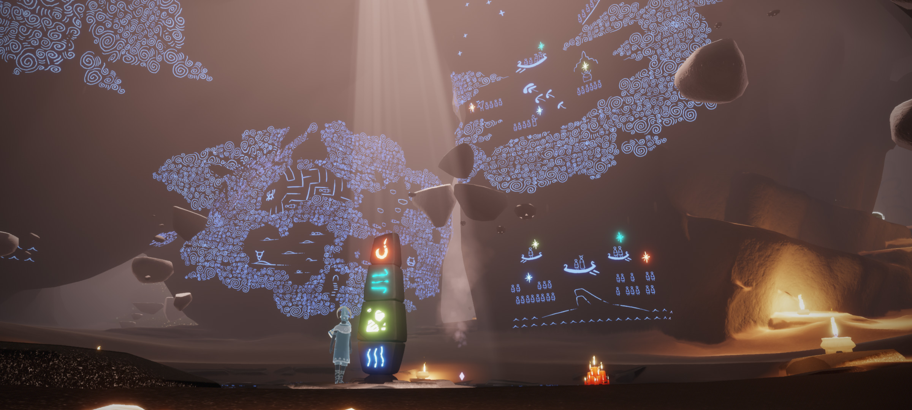
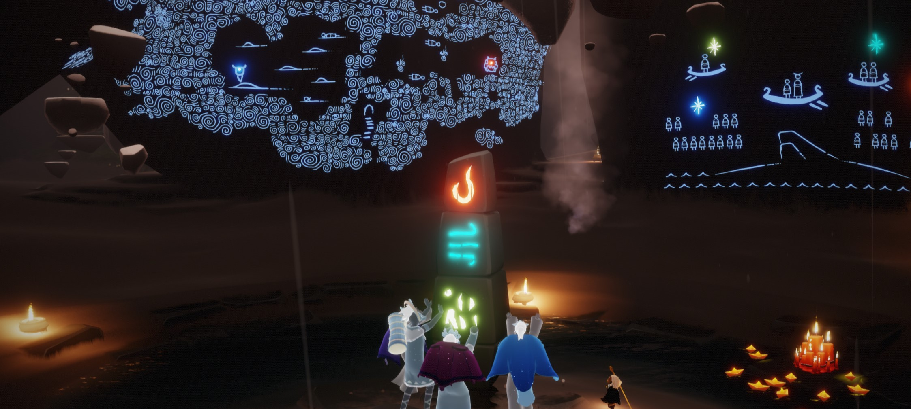
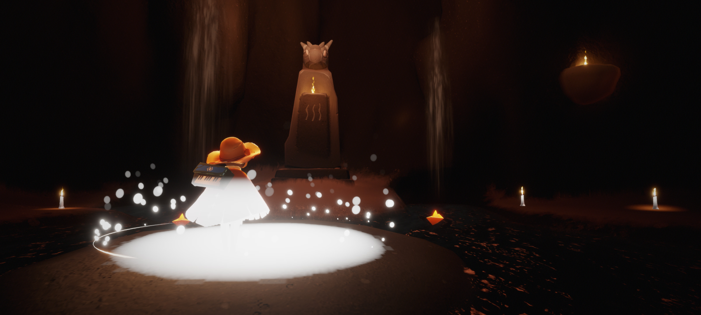

預言山谷
試煉石
玩家通過完成試煉，就可以幫助先祖，點亮試煉石上的標記以及山谷內的壁畫。通過所有的挑戰後，山谷會變得很好看。
♠ ♥ ♦ ♣ ♠ ♥ ♦ ♣ ♠ ♥ ♦ ♣ ♠ ♥ ♦ ♣ ♠ ♥ ♦ ♣ ♠ ♥ ♦ ♣ ♠ ♥ ♦ ♣ ♠ ♥ ♦ ♣ ♠ ♥ ♦ ♣ ♠ ♥ ♦ ♣ ♠ ♥ ♦ ♣ ♠ ♥ ♦ ♣ ♠ ♥ ♦ ♣ ♠ ♥ ♦ ♣ ♠
▼ ▼ ▼ ▼ ▼ ▼ ▼ ▼ ▼ ▼ ▼ ▼ ▼ ▼ ▼ ▼ ▼ ▼ ▼ ▼ ▼ ▼ ▼ ▼ ▼ ▼ ▼ ▼ ▼ ▼ ▼ ▼ ▼ ▼ ▼ ▼ ▼ ▼ ▼ ▼ ▼ ▼ ▼



